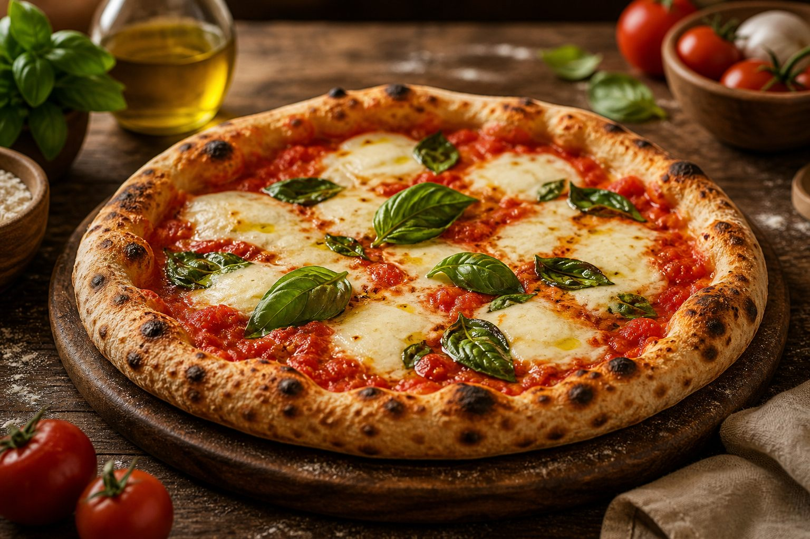

Pizza
Pizza clasică și specialități
Margherita Classica 430 g
32 lei
Sos de roșii, mozzarella, busuioc proaspăt, ulei de măsline.
Prosciutto e Funghi 470 g
39 lei
Sos de roșii, mozzarella, prosciutto cotto, ciuperci.
Diavola 460 g
41 lei
Sos de roșii, mozzarella, salam picant, ardei iute.